Lesson 15 · Part 1 · Models and safety · 5 questions
Running a model on your own GPU
Read first: Frontier vs open-weight models, Reading fast, writing slow
Whether a model fits your GPU is simple arithmetic: parameters times bytes per parameter, plus a KV cache that grows with every token of context. How fast it runs is just as simple: memory bandwidth divided by the bytes read per token. With those two sums you can judge any self-hosting plan in a few minutes.
The idea
Picture a database where every query is a full table scan, and the table must sit in RAM. Two questions decide everything. Does the table fit in RAM? And how many full scans per second can the memory deliver? Now add a twist: every query appends a row, so the table keeps growing.
Running a model on your own hardware works the same way. In Reading fast, writing slow you saw that each new token needs a full pass over the weights, plus the KV cache (the saved notes on every earlier token). So:
- The weights must fit. Memory ≈ parameters × bytes per parameter.
- The KV cache must fit too. It grows with every token of context, and each request has its own.
- Speed has a ceiling. Each new token reads all the weights plus the whole KV cache. Tokens per second ≤ memory bandwidth ÷ bytes read per token.

Up close
Weights and quantisation. Most open models are published in 16-bit numbers: 2 bytes per parameter. Quantisation stores each weight in fewer bits: 8-bit is 1 byte, 4-bit is half a byte. Real 4-bit files also store a scale for each small block of weights, so they average a bit more. llama.cpp's popular Q4_K_M format, for example, averages about 4.9 bits per weight. Fewer bits cost some accuracy, but less than you might expect: the GPTQ paper (2022) squeezed 175-billion-parameter models to 3 or 4 bits with "negligible accuracy degradation" on its benchmarks. Benchmarks aren't your tasks, so compare on your own.
Take Qwen3-32B, an Apache 2.0 open model with 32.8 billion parameters:
| Precision | Bytes per parameter | Weights |
|---|---|---|
| 16-bit | 2 | ~66 GB |
| 8-bit (Q8_0) | ~1.06 | ~35 GB |
| 4-bit (Q4_K_M) | ~0.61 | ~20 GB |
The KV cache. For every token, every layer stores a key and a value for each KV head. Its model config gives the numbers: 64 layers, 8 KV heads, head size 128. In 16-bit:
# bytes of KV cache per token
layers = 64
kv_heads = 8
head_dim = 128
k_and_v = 2 # a key and a value
nbytes = 2 # 16-bit
per_tok = (layers * kv_heads
* head_dim * k_and_v
* nbytes)
print(per_tok) # 262,144 = 0.26 MB
ctx = 32_768
print(ctx * per_tok / 1e9) # 8.6 GBA full 32k-token context needs 8.6 GB, nearly half of a 4-bit model's weights. It would be 8 times more if the model didn't share KV heads: Qwen3-32B has 64 query heads but only 8 KV heads (grouped-query attention), exactly to shrink this cache. Servers such as vLLM can also store the cache in 8-bit to fit more tokens.
Speed. One user, one request: each new token reads the weights plus the KV cache so far.

This is a ceiling. Real runtimes never use all the bandwidth, and attention over a long context adds work. Databricks' inference guide measures how close a server gets with exactly this sum: (weights + KV cache) ÷ time per token, compared with the chip's peak bandwidth.
Mixture of experts (MoE). Some models split each layer into many small "experts" and use only a few per token. Qwen3-Coder-30B-A3B has 30.5 billion parameters in 128 experts per layer, but each token uses 8 of them: 3.3 billion active parameters. All experts must be in memory, because the next token may pick different ones. But each token reads only the active ones: about 2 GB at 4-bit instead of 20. Same memory as a dense 32B model, a far higher speed ceiling.
Worked example
Two machines from the vendors' spec pages: an NVIDIA RTX 4090 (24 GB, 1,008 GB/s) and a MacBook Pro with M5 Pro (64 GB unified memory shared by CPU and GPU, 307 GB/s). Speeds are ceilings for one request with a short context.
| Model | Weights | 24 GB card | 64 GB laptop |
|---|---|---|---|
| Qwen3-32B, 16-bit | ~66 GB | No | No |
| Qwen3-32B, 8-bit | ~35 GB | No | Yes, ≤ 9 tok/s |
| Qwen3-32B, 4-bit | ~20 GB | Yes, ~11k tokens of context, ≤ 50 tok/s | Yes, full 32k context, ≤ 15 tok/s |
| 70B dense, 4-bit | ~43 GB | No | Yes, ≤ 7 tok/s |
| Qwen3-Coder-30B-A3B, 4-bit | ~19 GB (reads ~2) | Yes, short context, fast | Yes, long context, fast |
On the card, 24 − 20 leaves about 4 GB, and the runtime needs some of it, so roughly 3 GB of KV cache: about 11,000 tokens. A coding agent's context is often far longer. The laptop also has to leave room for macOS, your IDE and a browser. Apple's M5 Max goes to 128 GB at 614 GB/s, which doubles both numbers.
Your turn
Question 1 · ~2 min
Your team has a spare 24 GB card. Someone says "we'll run a 70B model at 4-bit on it". Will it fit?
Show answer
No. 70 billion × 0.5 bytes is 35 GB even with perfect 4-bit, and real 4-bit files are closer to 43 GB. That's before any KV cache. Options: two cards, a machine with more memory (a 64 GB laptop holds it, slowly), or a smaller model. Runtimes can put some layers in normal RAM, but those layers are read at system-memory speed, so it gets much slower.
Question 2 · ~2 min
On your 64 GB laptop, Qwen3-32B at 4-bit writes quickly in a fresh chat. Deep into an agent session with 32,000 tokens of context, it writes noticeably slower. Same model, same machine. Why?
Show answer
Every new token reads the whole KV cache as well as the weights. At 2,000 tokens the cache is about 0.5 GB; at 32,000 it is 8.6 GB. Bytes per token go from ~20.6 GB to ~28.6 GB, so the ceiling drops from about 15 to about 11 tokens per second, and attention itself does more work. Long context costs speed, not just memory.
Question 3 · ~2 min
Same Qwen3-32B at 4-bit. Machine A: RTX 4090, 24 GB, 1,008 GB/s. Machine B: MacBook Pro M5 Pro, 64 GB, 307 GB/s. Which writes faster, and which can hold a 32,000-token agent context?
Show answer
A is about 3 times faster; only B holds the context. Speed follows bandwidth: 1,008 vs 307 GB/s. But 32,000 tokens × 0.26 MB is about 8.4 GB of KV cache, plus 20 GB of weights: over 28 GB. That doesn't fit in 24 GB, and is easy in 64 GB. For agents, memory size often matters more than raw speed.
Question 4 · ~2 min
Qwen3-Coder-30B-A3B and Qwen3-32B take about the same memory at 4-bit (19 vs 20 GB). On the same GPU, the first writes several times faster. How?
Hint
Show answer
It's a mixture of experts. Each token uses 8 of 128 experts per layer, 3.3 billion of the 30.5 billion parameters, so it reads about 2 GB of weights instead of 20. All the experts still need to be in memory, because the next token may choose different ones. Memory follows total parameters; speed follows active ones.
Question 5 · ~3 min
Stretch: Qwen3-Coder-30B-A3B at 4-bit (~19 GB) fits on your 24 GB card, so you offer it to five colleagues, each running an agent with 60,000 tokens of context. The model has 48 layers, 4 KV heads and head size 128. Does it work?
Hint
Show answer
No. The weights are shared; the KV cache is per request. Per token: 48 × 4 × 128 × 2 × 2 = 98,304 bytes, so 60,000 tokens is about 5.9 GB per colleague, about 29.5 GB for five. Only about 5 GB is free after the weights, less than even one such context needs. Budget KV cache per user, at the context length agents really reach.
Interesting fact: The handful of numbers that broke 8-bit
In August 2022, Tim Dettmers and colleagues published LLM.int8() (NeurIPS 2022). Plain 8-bit quantisation worked on small models but fell apart above about 6 billion parameters. The cause was "outlier features": a few hidden dimensions with values far larger than the rest, growing from about 15 in a 6B model to about 60 in a 13B one, while ordinary values are mostly smaller than 1. In a 6.7B model, Dettmers counted about 150,000 outliers per sequence, all in just 6 feature dimensions. Squeeze everything onto one 8-bit scale wide enough for 60, and the small values round to zero. After a few layers, only noise is left. The fix was to keep those few dimensions in 16-bit and the rest in 8-bit. It halved memory with no measured loss up to 175B parameters: BLOOM-176B went from eight 80 GB A100 GPUs to four. It shipped in the open-source bitsandbytes library and in Hugging Face Transformers.
Facts checked: November 2026 (Qwen3-32B and Qwen3-Coder-30B-A3B model cards and configs; Llama 3.3 70B model card; llama.cpp quantize README; NVIDIA Ada GPU architecture whitepaper; Apple MacBook Pro tech specs; vLLM quantized KV cache docs; Hugging Face MoE blog; Databricks LLM inference guide; GPTQ, Frantar et al., 2022; LLM.int8(), Dettmers et al., 2022, his blog post and the Hugging Face bitsandbytes post).
Answers
- Question 1
No. 70 billion × 0.5 bytes is 35 GB even with perfect 4-bit, and real 4-bit files are closer to 43 GB. That's before any KV cache. Options: two cards, a machine with more memory (a 64 GB laptop holds it, slowly), or a smaller model. Runtimes can put some layers in normal RAM, but those layers are read at system-memory speed, so it gets much slower.
- Question 2
Every new token reads the whole KV cache as well as the weights. At 2,000 tokens the cache is about 0.5 GB; at 32,000 it is 8.6 GB. Bytes per token go from ~20.6 GB to ~28.6 GB, so the ceiling drops from about 15 to about 11 tokens per second, and attention itself does more work. Long context costs speed, not just memory.
- Question 3
A is about 3 times faster; only B holds the context. Speed follows bandwidth: 1,008 vs 307 GB/s. But 32,000 tokens × 0.26 MB is about 8.4 GB of KV cache, plus 20 GB of weights: over 28 GB. That doesn't fit in 24 GB, and is easy in 64 GB. For agents, memory size often matters more than raw speed.
- Question 4
It's a mixture of experts. Each token uses 8 of 128 experts per layer, 3.3 billion of the 30.5 billion parameters, so it reads about 2 GB of weights instead of 20. All the experts still need to be in memory, because the next token may choose different ones. Memory follows total parameters; speed follows active ones.
- Question 5
No. The weights are shared; the KV cache is per request. Per token: 48 × 4 × 128 × 2 × 2 = 98,304 bytes, so 60,000 tokens is about 5.9 GB per colleague, about 29.5 GB for five. Only about 5 GB is free after the weights, less than even one such context needs. Budget KV cache per user, at the context length agents really reach.